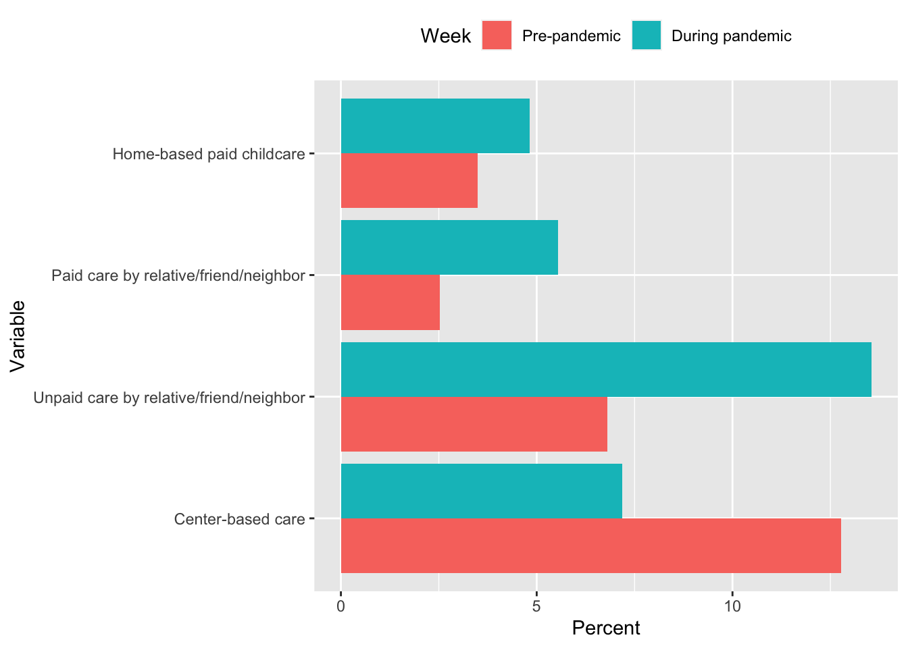
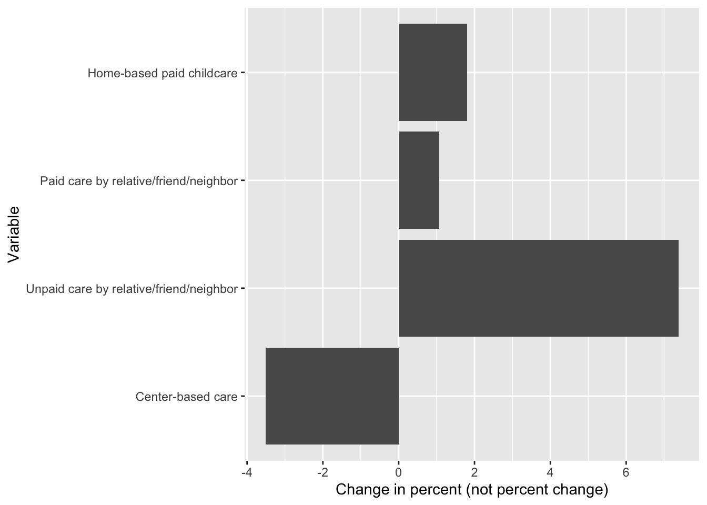
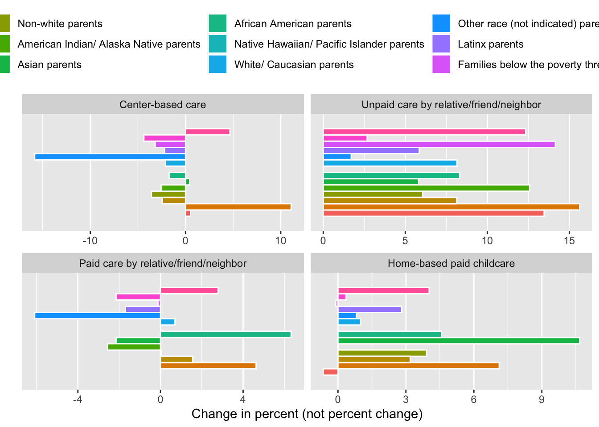
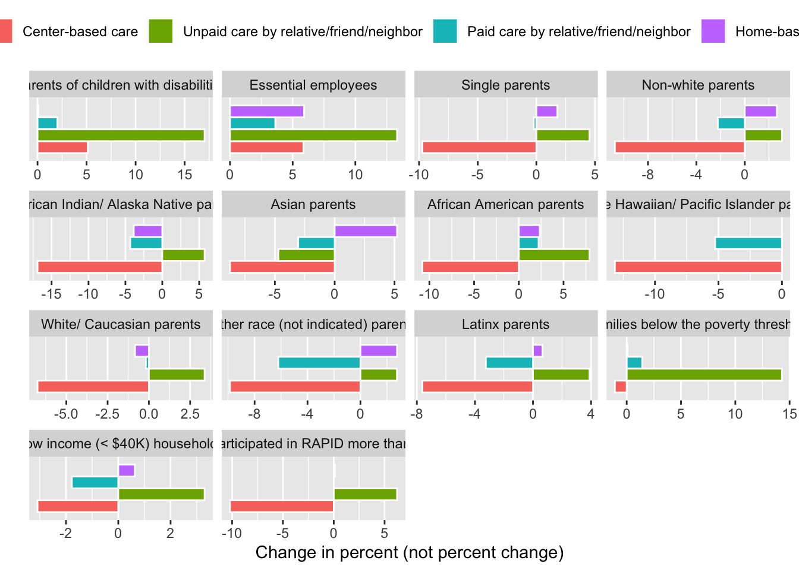
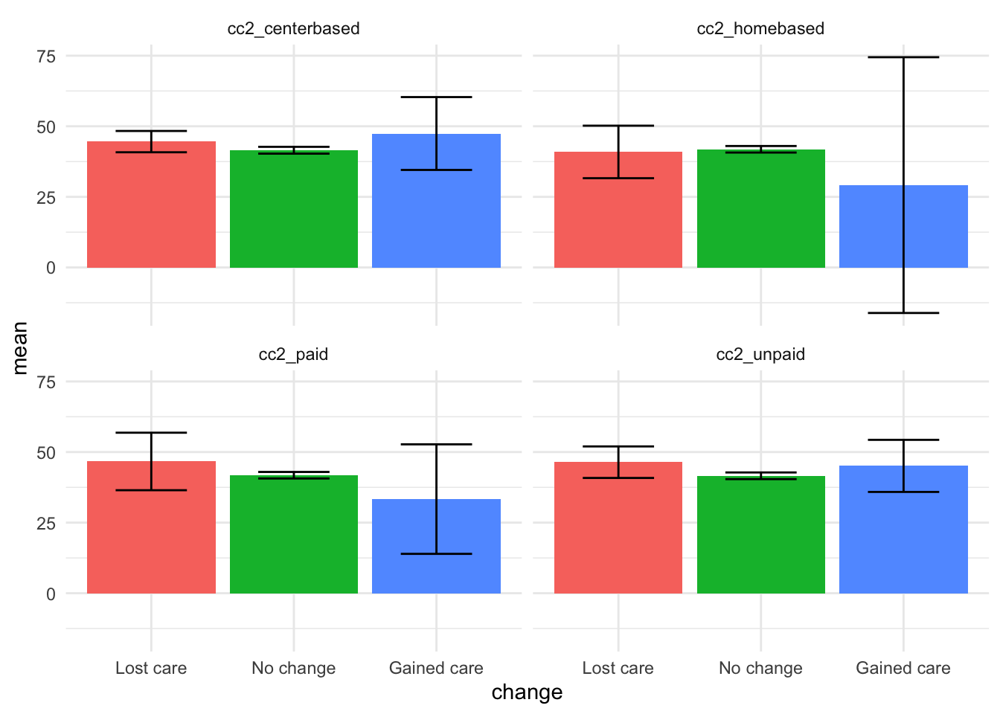
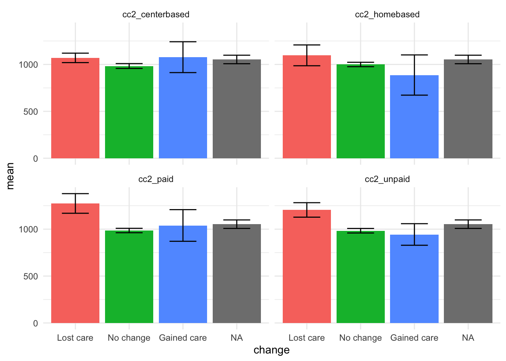
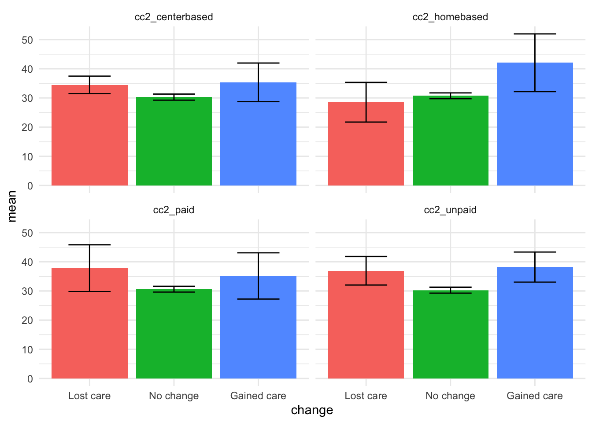
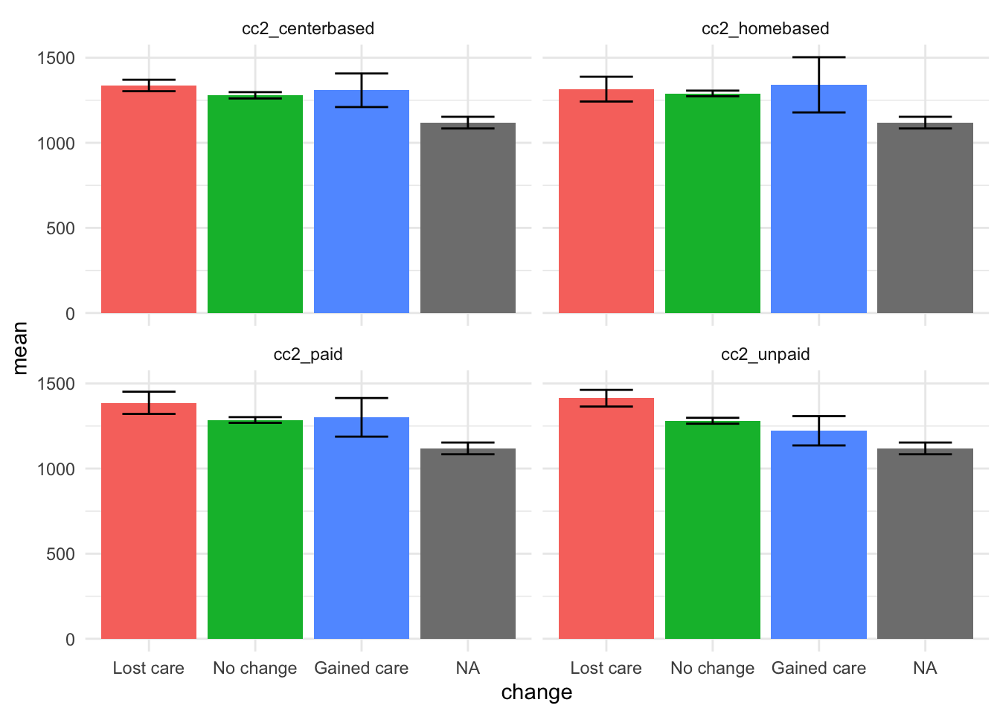
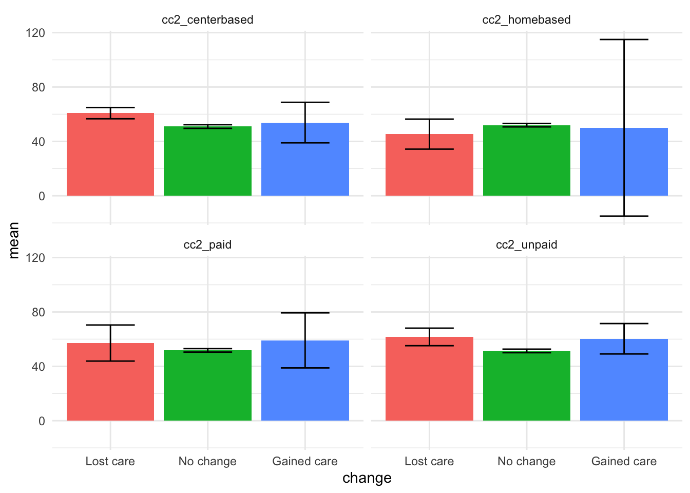
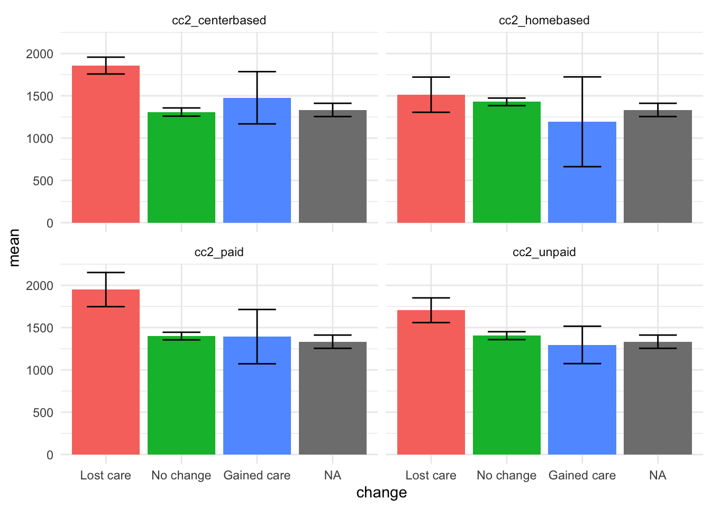

These analyses include retrospective reports of pre-pandemic childcare and the current experience reported the most recent time a caregiver participates in the RAPID survey.
| Type of childcare | Count | Percent | Count | Percent | Count | Percent |
|---|---|---|---|---|---|---|
| Center-based care | 1881 | 28.8 | 30 | 4.6 | -1851 | -24.2 |
| Unpaid care by relative/friend/neighbor | 986 | 15.1 | 84 | 12.9 | -902 | -2.1 |
| Paid care by relative/friend/neighbor | 523 | 8.0 | 21 | 3.2 | -502 | -4.8 |
| Home-based paid childcare | 497 | 7.6 | 27 | 4.2 | -470 | -3.4 |

| Type of childcare | Count | Percent | Count | Percent | Count | Percent |
|---|---|---|---|---|---|---|
| Parents of children with disabilities | ||||||
| Center-based care | 255 | 32.0 | 2 | 3.3 | -253 | -28.6 |
| Unpaid care by relative/friend/neighbor | 111 | 13.9 | 8 | 13.3 | -103 | -0.6 |
| Paid care by relative/friend/neighbor | 66 | 8.3 | 3 | 5.0 | -63 | -3.3 |
| Home-based paid childcare | 46 | 5.8 | 2 | 3.3 | -44 | -2.4 |
| Essential employees | ||||||
| Center-based care | 13 | 8.1 | ||||
| Unpaid care by relative/friend/neighbor | 27 | 16.9 | ||||
| Paid care by relative/friend/neighbor | 10 | 6.2 | ||||
| Home-based paid childcare | 16 | 10.0 | ||||
| Single parents | ||||||
| Center-based care | 277 | 35.7 | 2 | 4.8 | -275 | -30.9 |
| Unpaid care by relative/friend/neighbor | 128 | 16.5 | 4 | 9.5 | -124 | -7.0 |
| Paid care by relative/friend/neighbor | 85 | 11.0 | 1 | 2.4 | -84 | -8.6 |
| Home-based paid childcare | 63 | 8.1 | 2 | 4.8 | -61 | -3.4 |
| Non-white parents | ||||||
| Center-based care | 461 | 28.8 | 1 | 1.5 | -460 | -27.3 |
| Unpaid care by relative/friend/neighbor | 201 | 12.6 | 6 | 9.1 | -195 | -3.5 |
| Paid care by relative/friend/neighbor | 146 | 9.1 | 1 | 1.5 | -145 | -7.6 |
| Home-based paid childcare | 110 | 6.9 | 5 | 7.6 | -105 | 0.7 |
| American Indian/ Alaska Native parents | ||||||
| Center-based care | 13 | 21.7 | 0 | 0.0 | -13 | -21.7 |
| Unpaid care by relative/friend/neighbor | 4 | 6.7 | 0 | 0.0 | -4 | -6.7 |
| Paid care by relative/friend/neighbor | 4 | 6.7 | 0 | 0.0 | -4 | -6.7 |
| Home-based paid childcare | 1 | 1.7 | 0 | 0.0 | -1 | -1.7 |
| Asian parents | ||||||
| Center-based care | 63 | 29.3 | 0 | 0.0 | -63 | -29.3 |
| Unpaid care by relative/friend/neighbor | 23 | 10.7 | 0 | 0.0 | -23 | -10.7 |
| Paid care by relative/friend/neighbor | 15 | 7.0 | 0 | 0.0 | -15 | -7.0 |
| Home-based paid childcare | 11 | 5.1 | 2 | 20.0 | -9 | 14.9 |
| African American parents | ||||||
| Center-based care | 158 | 31.2 | 1 | 6.2 | -157 | -25.0 |
| Unpaid care by relative/friend/neighbor | 55 | 10.9 | 2 | 12.5 | -53 | 1.6 |
| Paid care by relative/friend/neighbor | 44 | 8.7 | 1 | 6.2 | -43 | -2.4 |
| Home-based paid childcare | 45 | 8.9 | 1 | 6.2 | -44 | -2.6 |
| Native Hawaiian/ Pacific Islander parents | ||||||
| Center-based care | 3 | 30.0 | ||||
| Unpaid care by relative/friend/neighbor | 0 | 0.0 | ||||
| Paid care by relative/friend/neighbor | 1 | 10.0 | ||||
| Home-based paid childcare | 0 | 0.0 | ||||
| White/ Caucasian parents | ||||||
| Center-based care | 1418 | 28.8 | 13 | 3.9 | -1405 | -24.9 |
| Unpaid care by relative/friend/neighbor | 783 | 15.9 | 30 | 9.0 | -753 | -6.9 |
| Paid care by relative/friend/neighbor | 376 | 7.6 | 12 | 3.6 | -364 | -4.0 |
| Home-based paid childcare | 386 | 7.8 | 11 | 3.3 | -375 | -4.5 |
| Other race (not indicated) parents | ||||||
| Center-based care | 224 | 27.7 | 0 | 0.0 | -224 | -27.7 |
| Unpaid care by relative/friend/neighbor | 119 | 14.7 | 4 | 13.8 | -115 | -0.9 |
| Paid care by relative/friend/neighbor | 82 | 10.1 | 0 | 0.0 | -82 | -10.1 |
| Home-based paid childcare | 53 | 6.6 | 2 | 6.9 | -51 | 0.3 |
| Latinx parents | ||||||
| Center-based care | 282 | 24.9 | 1 | 1.6 | -281 | -23.4 |
| Unpaid care by relative/friend/neighbor | 135 | 11.9 | 7 | 10.9 | -128 | -1.0 |
| Paid care by relative/friend/neighbor | 98 | 8.7 | 1 | 1.6 | -97 | -7.1 |
| Home-based paid childcare | 70 | 6.2 | 3 | 4.7 | -67 | -1.5 |
| Families below the poverty threshold | ||||||
| Center-based care | 220 | 20.3 | 0 | 0.0 | -220 | -20.3 |
| Unpaid care by relative/friend/neighbor | 152 | 14.0 | 5 | 14.7 | -147 | 0.7 |
| Paid care by relative/friend/neighbor | 89 | 8.2 | 1 | 2.9 | -88 | -5.3 |
| Home-based paid childcare | 38 | 3.5 | 1 | 2.9 | -37 | -0.6 |
| Low income (< $40K) households | ||||||
| Center-based care | 2 | 2.5 | ||||
| Unpaid care by relative/friend/neighbor | 6 | 7.6 | ||||
| Paid care by relative/friend/neighbor | 1 | 1.3 | ||||
| Home-based paid childcare | 2 | 2.5 | ||||
| Has participated in RAPID more than once | ||||||
| Center-based care | 1055 | 30.8 | 17 | 4.0 | -1038 | -26.8 |
| Unpaid care by relative/friend/neighbor | 490 | 14.3 | 49 | 11.6 | -441 | -2.7 |
| Paid care by relative/friend/neighbor | 263 | 7.7 | 10 | 2.4 | -253 | -5.3 |
| Home-based paid childcare | 275 | 8.0 | 19 | 4.5 | -256 | -3.5 |

All mental health variables have been POMP scored for ease of interpretation and combination. Scores range from 0 to 100, with low scores indicating better mental health and high scores indicating more mental health problems.





